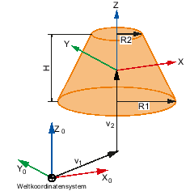

Im Fenster "Kegel" legen Sie Maße und Position sowie Werte zur Darstellung und Kollisionsbeobachtung eines kegelförmigen Schutzbereichselements fest.
|
Hinweis
|
Kegelform
Die Kegelform kann zwischen klassischem Kegel oder Kegelstumpf variieren. Folgende Parameterangaben sind zulässig:
-
Für den unteren Radius gelten nur Werte > 0.
-
Für die Höhe gelten nur Werte > 0.
-
Für den oberen Radius gelten Werte ≥ 0 (Standardwert 0).
Damit ein kopfstehender Kegelstumpf entsteht, darf der untere Radius kleiner sein als der obere Radius.
|

V1 | Summe der Offsets und Drehung zwischen diesem Element und dem Root-Element. |
V2 | Offsets und Drehung aus den Parametern dieses Elements. |
Darstellung in der Baumstruktur
| | In der Baumstruktur werden kegelförmige Schutzbereichselemente mit diesem Symbol gekennzeichnet. |
Elementwerte
Parameter | Bedeutung |
|---|
Name | Bezeichnung, die in der Baumstruktur angezeigt wird. |
Farbe  | Auswahl der Farbe für das Schutzbereichselement. Aktivieren Sie das Kontrollkästchen "aus Schutzbereich", wenn die Farbe des zugehörigen Werkzeug- bzw. Maschinenschutzbereichs übernommen werden soll. Deaktivieren Sie das Kontrollkästchen "aus Schutzbereich", um eine beliebige Farbe auszuwählen. Wählen Sie über die Auswahlliste die gewünschte Farbe.
|
Detailstufe | Legt fest, ab welchem Detaillierungsgrad der Schutzbereich bzw. die Schutzbereichselemente an der Bedienoberfläche angezeigt werden. Aktivieren Sie das Kontrollkästchen "aus Schutzbereich", wenn die Detailstufe des zugehörigen Werkzeug- bzw. Maschinenschutzbereichs übernommen werden soll. Deaktivieren Sie das Kontrollkästchen "aus Schutzbereich", wenn Sie eine eigene Detailstufe für das Element festlegen wollen. Geben Sie den gewünschten Detaillierungsgrad ein:
|
Verwendung | Anzeige Das Schutzbereichselement wird in der grafischen Ansicht angezeigt. Das Element ist nur sichtbar, wenn der Softkey "Anzeigemodell" aktiv ist. Das Element wird nicht auf Kollision überwacht. Überwachung Das Schutzbereichselement wird zur Kollisionsvermeidung herangezogen. Das Element ist nur sichtbar, wenn der Softkey "Überwach.-modell" aktiv ist Anzeige + Überwachung Das Schutzbereichselement wird zur Anzeige in der grafischen Ansicht sowie zur Kollisionsvermeidung herangezogen. Das Element ist in beiden Darstellungsvarianten sichtbar.
|
Höhe (Z) | Höhe des Kegels in Z-Richtung. |
Unterer Radius | Angabe des Radius R1 |
Oberer Radius | Angabe des Radius R2 |
Offset (X) | X-Anteil des Richtungsvektors. |
Offset (Y) | Y-Anteil des Richtungsvektors. |
Offset (Z) | Z-Anteil des Richtungsvektors. |
Drehachse (X) | X-Anteil des Drehvektors. |
Drehachse (Y) | Y-Anteil des Drehvektors. |
Drehachse (Z) | Z-Anteil des Drehvektors. |
Drehwinkel | Wert, um welchen um den Drehvektor gedreht wird. |